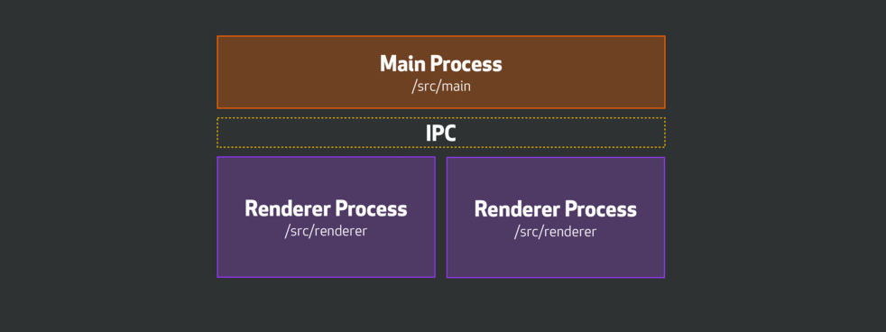

What is Electron?
Open Source Tool for building cross-platform native apps using web technologies
Javascript, HTML, CSS
Electron
NodeJS
Chromium
Operating System
Main
(application lifecycle)
- Node.js
- BrowserWindow
- menu
- dialog
- ipc
Renderer
(web page)
- Node.js
- DOM
- remove
- webframe
- ipc
How its put together

const { app, BrowserWindow } = require('electron')
let mainWindow = null
app.on('ready', () => {
mainWindow = new BrowserWindow({width: 800 ,height: 600})
mainWindow.loadURL(`file://${__dirname}/index.html`)
mainWindow.on('closed', () => {
mainWindow = null
})
})
window.onload = function () {
var fs = require('fs')
var p = document.createElement('p')
p.textContent = fs.readFileSync('kittens.txt')
document.body.appendChild(p)
}
window.onload = function () {
var fs = require('fs') // WTF?
var p = document.createElement('p')
p.textContent = fs.readFileSync('kittens.txt') // WTF?
document.body.appendChild(p)
}
window.onload = () => {
const fs = require('fs')
const p = document.createElement('p')
p.textContent = fs.readFileSync('kittens.txt')
document.body.appendChild(p)
}